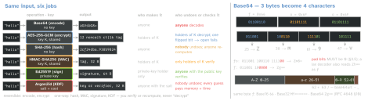
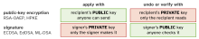

crypto · folio
In one line: Encoding changes the format — anyone reverses it, no secret. Encryption hides content — reversible with a key. Hashing fingerprints — one-way, no key. A MAC (shared key) or a signature (private key) proves who produced the bytes and that they are unchanged. A KDF turns a secret into keys — slowly, when the secret is a password. Choose by the property needed: format, confidentiality, integrity, authenticity, non-repudiation.
Download PDF Print view LaTeX source


What each one guarantees — and what it does not
| gives | does not give | standard | |
|---|---|---|---|
| encode | bytes safe in text: JSON, URL, header | any secrecy or integrity | RFC 4648, 3986, 3629 |
| encrypt | confidentiality; AEAD adds integrity | length hiding — GCM output = input + 16 B | FIPS 197, RFC 5116 |
| hash | a fingerprint: equal digest ⇒ equal bytes | tamper-proofing, unless the digest comes by a trusted path | FIPS 180-4, 202 |
| MAC | integrity + origin among key holders | proof to a third party | RFC 2104 |
| sign | integrity + origin + non-repudiation; anyone verifies | confidentiality | FIPS 186-5, 204, 205 |
| KDF | keys or a verifier from a secret | — reversal is not its job | RFC 5869, 8018, 9106 |
Encodings — RFC 4648 and its neighbours
| name | alphabet | bits | size | padding / note |
|---|---|---|---|---|
| Base16 (hex) | 0-9 A-F | 4 | ×2 | none |
| Base32 | A-Z 2-7 | 5 | ×8/5 | = to 8 chars; case-insensitive channels |
| base32hex | 0-9 A-V | 5 | ×8/5 | keeps the bytes’ sort order |
| Base64 | A-Z a-z 0-9 + / | 6 | ×4/3 | = to 4 chars |
| base64url | … - _ for + / | 6 | ×4/3 | = often skipped; JWS: always |
| percent | %XX | — | ×3 per escaped byte | RFC 3986 passes A-Z a-z 0-9 - . _ ~ |
- RFC 4648: MUST pad, MUST reject characters outside the alphabet, no line breaks — each “unless the referring spec says otherwise”: MIME wraps at 76, PEM (RFC 7468) at exactly 64.
- Lax decoders give one byte string many spellings: compare and sign decoded bytes.
- HTML forms (WHATWG) write space as
+and read+as space: raw Base64 in a query string loses its+. Use base64url, or percent-encode with uppercase hex.
Text is an encoding too — hash and sign bytes
é is U+00E9 = C3 A9 in UTF-8 (NFC) or e + U+0301 = 65 CC 81 (NFD): canonically equivalent (UAX #15), different bytes and digests — SP 800-63B-4: a password SHOULD be NFC-normalised before hashing. JSON: sign the exact bytes sent (JWS signs its base64url text, so key order and whitespace never matter) or canonicalise — RFC 8785 JCS: keys by UTF-16 code units, no whitespace.
What everyday artifacts really are
| artifact | is | so |
|---|---|---|
Authorization: Basic dXNlcjpwYXNz | Base64 of user:pass | anyone reads it; RFC 7617: secure only inside TLS |
Kubernetes Secret data: | Base64 | etcd stores it unencrypted by default |
PEM BEGIN PUBLIC KEY | Base64 of DER SubjectPublicKeyInfo | encoding of a public value |
JWT, App Store JWSTransaction | base64url header.payload.signature | signed, not encrypted — decoding is not verifying |
SRI integrity="sha384-…" | Base64(SHA-384(file)) | trusted because the page carries it; SHA-256/384/512 MUST work |
Content-Digest: sha-256=:…: | hash (RFC 9530) | an on-path attacker swaps it — add TLS or a signature |
GitHub X-Hub-Signature-256 | sha256= + hex HMAC | compare in constant time; SHA-1 header is legacy |
| TOTP 6-digit code | HMAC-SHA1(K, floor(t/30)), truncated | a MAC short enough to type |
Hashing an identifier is not anonymising it
10-digit phone numbers are only 1010 inputs: hash them all and every digest reverses. EDPB Guidelines 01/2025: anyone who knows the identifier recomputes an unkeyed pseudonym — use a keyed one-way function (a MAC), secret kept apart. Still personal data: pseudonymised (GDPR Art. 4(5)), not anonymous.
MAC vs signature — who can prove what
Both prove integrity and origin. A MAC tag could come from either holder of K: no proof to a third party. A signature comes only from the private-key holder and anyone can check it — non-repudiation (FIPS 186-5: verifiable “by a third party”). RFC 9421 HTTP Message Signatures carries both: hmac-sha256 beside ed25519, ecdsa-p256-sha256, rsa-pss-sha512. A truncated HMAC keeps ≥ half the hash and ≥ 80 bits (RFC 2104).

- FIPS 186-5 (Feb 2023): RSA, ECDSA (deterministic RFC 6979 too), EdDSA (Ed25519, Ed448); DSA only verifies old signatures; a signing key pair “shall not” do anything else.
- “Signing = encrypting with the private key” fits only textbook RSA; ECDSA, EdDSA, ML-DSA cannot encrypt. Encryption to a public key proves nothing about who sent it.
- RSA and ECDSA sign a digest of the message: a collision makes one signature valid for two documents — why MD5 and SHA-1 are dead for signing.
Key derivation — match the KDF to the entropy
| input | KDF | rule |
|---|---|---|
| password, PIN — guessable | Argon2id, scrypt, bcrypt, PBKDF2 | salted and slow: the attacker pays the cost per guess, per user |
| DH secret, master key — already random | HKDF (RFC 5869) | extract concentrates entropy, “cannot amplify” it; info binds the purpose; ≤ 255 × hash length |
PBKDF2: U1 = HMAC(P, S ‖i), Uj = HMAC(P, Uj-1), block = U1 ⊕ …⊕UC. Its floors aged: RFC 8018 (salt ≥ 64 bits) and SP 800-132 (2010, revision announced 2023; random salt ≥ 128 bits): ≥ 1 000 iterations; OWASP: 600 000 (SHA-256).
Storing passwords — NIST SP 800-63B-4 (final, Aug 2025)
- Hash, never encrypt — an encrypted table is one stolen key from every password; OWASP keeps encryption for a password that must be replayed to another system.
- Salt ≥ 32 bits; a scheme from SP 800-132; cost “as high as practical”, raised over time; SHOULD add a keyed hash with a secret in an HSM or TEE (a pepper).
- Verify the entire password, never truncate (bcrypt stops at 72 bytes). ≥ 15 characters single-factor, ≥ 8 with MFA, accept ≥ 64; no composition rules; no periodic change; check a blocklist of breached and common passwords; no hints.
- Hashing on the client does not replace the server’s: whatever the server compares is the password.
Quantum — what changes per job
Dates: NIST IR 8547, still a draft (Nov 2024). Encoding: unaffected. AES ≥ 128,
SHA-256, HMAC: PQ category ≥ 1, no transition planned. Public-key jobs fall to Shor: encryption now (recorded today, decrypted later); authentication only when checked — except code a device verifies for years. Detail: post-quantum-crypto.
Traps
- “It’s encrypted, so nobody changed it” — CBC and CTR without a MAC are malleable; use AEAD.
- “A key in the binary keeps it secret” — whoever has the app has the key.
- “A checksum detects tampering” — CRC32c, Adler-32, MD5 catch noise, not attackers (RFC 9530 deprecates them).